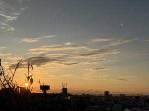

うるがいの話 ある日
最新: またもや赤肉【うるがいの話 ある日】とは 一日だけのプログです
『うるがいの話』の最新一日だけのプログで、通信料が少なく経済的だ。カニの画像をクリックすると全ての日付が載る『うるがいの話』サイトを表示します
|
|
【うるがいの話】 うるがい(ｳﾙｶﾞｲ urugai)とは、『もずくがに』の名前でとても大きくなります。 |
|---|---|
|
|
【カミマヤーの話】 猫のことを方言でマヤーといいます。カミマヤー（kamimayaa）とは、神の猫のことです。 |
|
【たながぁの音楽】 たながぁ（ﾀﾅｶﾞｰ tanagaa）とは手長えびのことで、何種類かあり大きいのは車 エビぐらいになります。 |

|
【ぶながぁの話】 ぶながぁ(ﾌﾞﾅｶﾞｰ bunagaa)とは、赤い髪の毛、赤い身体、そして身長は１ｍ２０ｃｍ ぐらい、川の蟹を食べているの目撃された。場所は沖縄県国頭郡大宜味村のと ある村僕の隣近所に住んでいる爺さんから、聞いた話です。 |
|
|
【ギーマの話】 ギーマ(giima)とは、山原の里山に咲くスズランに似た、 花を付けます。実は食べられます、 気が付くと口の周りが紫になっています。 |
2024年09月05日 (木）またもや赤肉
15:30

佐藤愛子 『九十歳。何がめでたい』 より
戦争体験者である私は、空襲警報が鳴り響き、町は死んだように鎮り返った
怖ろしい静寂を知っている。犬の吠え声もなかったのは、食糧欠乏のために
犬を飼う人がいなくなったためだった。「赤犬は食えます」などという人が
いたりして、犬もオチオチ吠えてはいられなかった。
またもや、赤肉である。お義母さんの９０才になる妹が、お盆時に『九十歳
。何がめでたい』をいま読んでいると言ったので、図書館から借りて読んだ
ら。その昔、『少林寺（１９８２）』で赤肉を食べるシーンを見たことがあ
る。ネットで、『赤肉とは』を探すが信頼できるすじはなかった。佐藤愛子
の本を手て続けに読んだ。『役に立たない人生相談』、そして九十八歳。戦
いやまず日は暮れず』で筆を置くと書いてあった。スゴイ人もいるのだ、今
は百歳でまだ健在である。
１４時過ぎ、激しい痛みに襲われる。たまらず、座薬を使う、１０分後痛み
は治まる。２リットルの水と塩を日課としている、早すぎる尿路結石の訪れ
好転反応だといいのだが。歳をとるなら尿路結石から開放されなければなり
ません、ん。
１５時１７分 ビットコインの総資産 ￥２３、７３９（↓２０６）